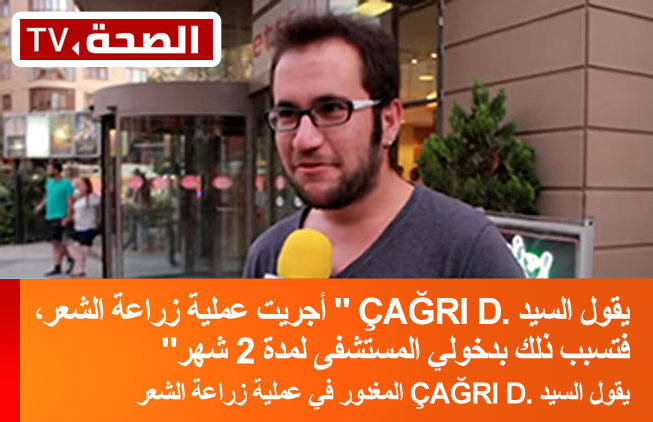

نظرا لأثمانها الباهظة و الشكايات المتتالية بعد الخضوع للعملية، بدأت تظهر عيوب هذه المهنة، الأسعار في المراكز الصغيرة ذات الاستثمارات المنخفضة تبدأ من 2،000 ليرة، في حين أن أسعار المراكز الراقية وصلت من 10،000 إلى 15،000 ليرة
لقد اصبح هذا سببا للرجال المعروفين بأنهم لا يتحملون الألم كثيرا في عدم زيارة مراكز زراعة الشعر، علاوة على ذلك الشكايات المتزايدة
الطريقة مؤلمة و الجروح تلتئمبصعوبة كبيرة
ان الذين خضعوا لعملية زراعة الشعر يشتكون من الطرق المستعملة في عملية الزراعة و هم نادمون على ذلك، كما ان انعدام الخبرة لدى الذين يقومون بالعملية الجراحية صعب الأمر أكثر
في مدة 1 شهر تم تسجيل أكثر من 1،500 شكاية ضد شركة
مؤسسة الصحة والجمال
بالنسبة للمعلومات التي تحصلنا عليها توجد شكايات كثيرة ضد شركة مؤسسة الصحة والجمال
بعد أن صار يعاني من الألم المستمر دون توقف و لا يحصل على الشعر الذي يريده و يتمناه و لا يستطيع استرجاع نقوده، اصبح الزبون في حيرة من أمره إلى أين يذهب من أجل معالجة شعره


تحرص شركتنا على سرية معلوماتكم وعدم مشاركتها مع أي طرف آخر
ربورتاجنا مع من تم غدرهم في عملية زراعة الشعر
نحن الان نستمع الى السيد HÜSEYİN: " قبل 3 سنوات أخذوا مني 3000 ليرة و قالو لي أني سأجري ثلاث عمليات زراعة شعر، في العمليتين الأولى و الثانية أصابني التهاب في الجروح فاضطررت لاستعمال المضادات الحيوية و خضعت للعلاج لمدة 6 شهور، بعد ذلك قالو لي ان العملية الثالثة غير مناسبة.
يصرح السيد Çağrı D. عن طريق الهاتف، بقوله أنه بعد أن أجرى عملية زراعة شعر في إزمير يقول: لن أتكلم عن الأسعار، ذهبت إلى دكتور "B**** M**** " مشهور و معروف عند الجميع، اتفقنا على زراعة 5000 شعرة مقابل 4200$، فترات المعالجة كانت طويلة جدا، لان الشعيرات المزروعة كانت بها خلل في الجذوع مع الأسف تضررت حوالي 1000 شعرة في 5 شهور الأولي
هناك شكايات كثيرة من طرف مراكز زراعة الشعر بسبب التركيبة التي قام باكتشافها الدكتور البروفيسور Muhamet Koçoğluفي التقرير الذي قمنا بإجرائه مع المدير العام لمركز زراعة الشعر "Renew Saç Ekim Merkezi" السيد Şükrü Taner أفاد بان مركز زراعة الشعر فقد عدد كبير من الزبائن في 6 شهور الأخيرة و ذلك بسبب التركيبة التي قام باكتشافها الدكتور البروفيسور Muhamet Koçoğlu
قبل حوالي 6 شهور، بعد ان قام الدكتور البروفيسور Muhamet Koçoğlu بنشر خلطة خلاصة الثوم الأسود تضررت الاعمال كثيرا في مراكز زراعة الشعر كما يقول السيد " Şükrü"، بعد اكتشاف هذه الخلطة الزبائن لم يعودوا بحاجة الى زراعة الشعر
الجلد يتجدد باستعمال خلاصة الثوم الأسود (Liva) و بالتالي تتكون خلايا الشعرخلايا الشعر الميتة لا يمكن اعادتها للحياة، لذلك يقول المتخصصون لابد من تجديد الجلد الذي توجد فيه تلك الخلايا و ذلك من خلال تهييج المادة الطبيعية الموجودة في الجلد و التي تعمل على نموه و تجدده مرة ثانية
Selim Kılıçeli يجيب
خلاصة الثوم الأسود (Liva) تنبت الشعر الجديد؟ كم هي مدة انبات الشعر؟
ما هو الثوم الأسود؟ كيف يِؤثر؟
بفضل الطرق الخاصة التي اتبعتها مخابر أمبيريال في لندن من خلال معالجة الثوم الأسود فقد تم التوصل الى مستخلصات مكنتنا من الوصول إلى اصول جذور الشعر و تغذيتها
البروفيسور الدكتور كوش أوغلو تتعرض مراكز زراعة الشعر الى اهانه لفضية و تجاوزاتبسبب التصريحات التي قام بها ، و بسبب الفقدان المتزايد للزبائن، بقي البروفيسور وجها لوجه مع الانتقادات و الإهانة اللفظية، و بعد شكاية مركزين من مراكز زراعة الشعر للمحكمة و العمل الذي قام به الدكتور هو عبارة عن بحث علمي محكم يمكننا القول ان الدكتور غير مذنب
ان وصفة خلاصة الثوم الأسود (Liva) صعبة جدا !ان مزج خلطة الثوم الأسود مع الخلطات الطبيعية الأخرى يحتاج دقة ومعايير خاصة جدا، لذلك فإن البروفيسور يقول ان طريقة استعمال المصل والشامبو الذي تحتوي عليه خلاصة الثوم الأسود (Liva) الحقيقية، طريقة سهلة
قمنا بمقارنة خلاصة الثوم الأسود مع زراعة الشعر نحن قنات الصحة TV من أجل ذوي الامل الذين ليس لديهم شعر، تمكننا من الوصول إلى موزع مجموعة Liva تركياكقسم أخبار الصحة و نتيجة للقاءات الذي قمنا به مع الموزع قمنا بالحصول على تخفيض خاص للموظفين و متابعين القناة
تحصلنا على تخفيض بنسبة %50 لمدة 24 ساعةفقط هذا التخفيض ساري المفعول لأول 500 شخص
اسفون و لكن هذا ما تمكننا من توفيره، يمكنكم اختيار العلبة من خلال الاستمارة الموجودة في الجنب، كقسم أخبار الصحة لا نهدف إلى الربح المادي، الاستمارات التي تقومون بملئها يتم ارسالها مباشرة إلى موزع Liva في تركيا
اذا تمكننا من افادتكم و لو بالشيء القليل فذلك هو منتهى سعادتنا، الان من بين 1000000 مستعمل Liva المتواجدين حول العالم نرجو منكم ملأ الاستمارة من أجل الحصول على التخفيض
اليوم الأخير من أجل الحصول على مجموعة الاستعمال الشخصي و50 % تخفيض عن طريق الدكتور PROF.DR. Muhamet KOÇOĞLU
79

HASAN ENVER
CİHAN ÜNAL
مراحل العلاج بخلاصة الثوم الأسودخلال استعمال خلاصة الثوم الأسود، في الأسبوع الأول ستواجهون حكة خفيفة في الجلد بعد ذلك تبدأ خلايا الشعر في التجدد

لانه توجد أسئلة كثيرة اريد أن اجيبكم من هنا، أصدقائي الأعزاء، خلاصة الثوم الأسود أو ما كان يعرف من قبل بـاسم Liva لابد ان نستعملها بدقة و بعناية أكبر، و عند الاستعمال المفرط تصبح لديكم حكة قوية و تهييج للجلد، لذلك نرجو منكم الالتزام بالمقادير التي وصفها المختص، في الأسبوع الأول من الاستعمال يصبح لديكم حكة في جلدة الرأس و احمرار خفيف، لا داعي للخوف و استمروا في استعمال العلاج، بعد 15 يوم يمكنكم الحصول على نتائج ملموسة، أولا بعد أن استعملوا المصل في الاماكن التي لا توجد فيها لحية أو شعر قوموا بوضع القبعة أو القلنسوة و بعد أن تنتظروا مدة كافية قوموا بغسله بالشامبو، تحياتي الأخوية

سيد Muhammed ، انا أيضا صارت معي حكة لكن بعدها صار ينبت الشعر في الأماكن التي لم يكن فيها شعر من قبل، متى يصبح هذ الشعر الذي ينمو أكثر قوة و متانة؟؟؟ كم يجب علي ان استعمل المنتوج من وقت ؟؟؟
انصحك باستعمال المنتوج مدة 1 شهر للحية و مدة 2 شهر لشعر الرأس، فقط عند الاستعمال يمكنكم معرفة ذلك بنفسكم أفضل
كم يجب أن استعمله من مرة في اليوم، حسب علمي مرة واحدة في اليوم، أرجوا منكم الإجابة على سؤالي
عزيزي Tyafun المختار الحجازي مرة واحدة أو مرتني في اليوم كافية، و لكن انصحك أن لا تكثر أكثر من ذلك.

أنا استعمل المنتوج منذ 20 يوم لقد أصبح لدي احمرار، لكن ليس ظاهر كثيرا، بعد أن تضعون العلاج بمدة 2 ساعة يزول ذلك الاحمرار، بعدها ابشركم برؤية الشعيرات الجديدة تنمو
أنا استعمل المنتج منذ 3 أيام، صار معي حكة و احمرار في المكان الذي وضعت فيه العلاج، بكل بساطة إن لم ينبت الشعر ستجدونني عندكم في المستشفى لكي استعيد حقي، بهذا القدر .............

استاذي المحترم، ولدي يقوم بالاستعمال لمدة 1 شهر، انا اشتغل في باكو و اشتري المنتج و ابعثه إلى ولدي في البيت و نحن ممنونين من الاستعمال، فقط أريد أن أسألكم مع العلم أني كبير في السن و شعري كله صار أبيض لو استعملت المنتج هل ينبت شعر أسود؟ ماذا علي أن أفعل، أنا في العادي شعري أبيض أريد شعري أن يصير أطول أكثر أريد أن أعرف انه لن يسبب لي أية مشاكل؟

وكيلي barış manço ، من أين أقوم بتقديم الطلبية؟ لطفا لاأريد أن أقع المنتج المغشوش. انه مال كثيرا
استاذي، يبدو لي انك تشتغل في هذه الشركة، هل هذا المنتج هو خاص بحظرتكم؟ و إلا ماذا........
لا طبعا أخي Deniz، أنا أتكلم عن خلاصة الثوم الأسود Liva، حسب علمي يوجد موزع واحد و وحيد في تركيا، في القريب سيصبح له منافسين، الاختيار لكم
شكرا جزيلا أستاذي، لقد قمت بشراء المنتوج، سأقوم بتجريبه و أتمنى أن يكون جيد، لأنني سأكتب النتيجة هنا
بعد المصل و الشامبو هل يمكن أن استعمل الشامبو الخاص بي، أنا أعرف ان المتخصصين في الأعشاب يعرفون ذلك و لكن سألت 3-5 أشخاص و لم يرد أي أحد على سؤالي

لا أضن أنه يوجد عند كل العشابين، أعرف مكانا في استنبول و لكن لابد أن تنتبه على الجرعات التي يعطونها لك، لانه لو كان قليل أو كثير فإنه لن يفيدك، لذلك ارجو منك الاطلاع و التأكد أن المنتج خاص بالشعر و ليس خاص بأشياء أخرى
عزيزتي Funda، نعم يمكن للجميع استخدامه. ولكن لطفا الاختلاف فقط في الجرعة الموصى بها
سيدي أنا Cemil ، أنا زرت عيادتكم السنة الماضية، أضن أنه نفس العلاج الذي اعطيتموني منه السنه الماضية، شكرا كثيرا لكم
اصدقائي، انتبهوا، يوجد حكة كبيرة، استعملته 3 مرات في اليوم، ثم قمت بالتخفيض إلى مرة في اليوم، و الان استعمله مرة واحدة في الأسبوع

هل يجب علينا أن نصدقك ذلك، اذا يوجد من استعمل هذا المنتوج أرجوا منه أن يراسلني على الخاص
لقد مرت مدة يومين، قالو لي المنتوج في الموزع الخاص بالمدينة التي أسكن فيها، بعد 3 أيام لدي سفر خارج البلد لابد أن أحصل على المنتوج
أصدقائي أن أستعمل المنتج، وصيتي بالنسبة للمستعملين الجدد لا تنتظروا خروج الشعر في لحظة، فقط قليل من الصبر، اصبروا

هل حقيقة يوجد شيء مثل هذا، أنا محتاج كثيرا لهذا المنتج، راسلوني على الخاص من فظلكم
اليوم الأخير من أجل الحصول على مجموعة الاستعمال الشخصي و50 % تخفيض عن طريق الدكتور PROF.DR. Muhamet KOÇOĞLU
79